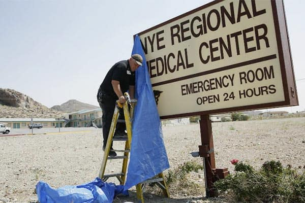

Hope for the rest of us
The pit
Anger and despair consume an aggrieved father — until a more powerful force removes the darkness
Four months after his daughter’s boyfriend shot and killed his wife, Roz, and seriously wounded him, Buz Caldwell returned home for the first time.
He felt Roz’s presence with every step. The house was decorated just as she wanted it. The marble countertops. The tan carpet. The dark brown bathtub and matching toilet Buz abhorred and Roz loved.
Nearly 25 years later, the memory of that day was almost more than Buz could bear. He faltered, then said, “It’s going to take a minute.” Tears trickled down his cheeks. He pulled off his glasses and swiped at his face with the sleeve of his gray sweat shirt.
“You walked in the house and her stuff was everywhere. And, honestly, you absolutely didn’t want anyone else there,” Buz recalled. “Every time you walked in the house, you had to go through that. It never got what you’d call easier.”
He was drawn toward, yet repulsed by, the bedroom where Roz had died.
The police had sliced away large portions of the bloodstained carpet. Interior doors no longer hung from their hinges. Fingerprint dust covered the furniture.
Buz lugged away scraps of long, shaggy carpet left behind.
“I actually found bullets that had hit me or Roz and gone through us that had been missed,” he said. “Don’t ask me how.”
Roz is buried in Frisco, which was a small rural town at the time of the shootings. (Rose Baca/Staff Photographer)
Getting even
On Monday, July 6, 1992, deputies arrested Krissi while she was standing outside her car at summer school. She was booked into the same detention center where Bobby had been taken.
Though expected, the news still crushed Buz. He pushed away everyone but family and barely tolerated them. In his grief and rage, he became unrecognizable, even to himself. He descended into what he calls “the pit,” a lonely hole where he existed but didn’t really live.
Krissi was arrested in July 1992. Three months earlier, Bobby was pulled out of a classroom at school and taken to a juvenile detention center.
He put in 90 to 100 hours a week for Texas Instruments, traveling as much as possible so he didn’t have to be at home with his memories. He read voraciously, not caring about the subject as long as the books took his mind somewhere else.
He had never played golf, but now he watched the game incessantly on TV, the sound muted, his eyes fixed on a world more serene than his.
He didn’t seek help. Shrinks, he thought, were for people who were spiritually and intellectually weak.
“I don’t guess I have ever really believed in emotional shock,” he said. “I learned shock is real.”
Buz would get peace of mind by getting even. That was the plan. He would testify against Krissi and Bobby, and they would be convicted and sent away for a long time. That would be justice, and justice would bring closure.
“I was out for blood,” Buz said. “I’ll make no bones about that.”
Advertisement
Tried as adults
In his fury, Buz supported prosecutors’ plan to try the teenagers as adults. Today, judges and juries consider factors such as brain development in cases involving kids, but nobody thought about that when Krissi and Bobby were tried. The public and lawmakers believed dangerous kids should do adult time.
Buz visited Krissi in jail before her trial, but when she found out he was seeking the maximum punishment, she told him to stop.
“I love you, but to me it seems that you have become my enemy. I know that your going through some rough times, and I’m praying for you,” she wrote from the Collin County Jail. “This next month is going to be hell on both of us, and there’s no point in either of us making it more difficult on the other. You may be right, they may lock me and Bobby up for 35 years. At least your wish will be granted, huh?”
Still, she signed off: “I love you Daddy.”
Buz didn’t stay away. Father and daughter didn’t have much to say to each other, but Buz had to see her. Once, he pressed his hand against the window as a sign of affection. Krissi returned the gesture.
Looking for the next great story to read?
If you like narrative storytelling such as this, please consider supporting dallasnews.com by subscribing today.
Subscribe nowWhen the trials came, Buz wasn’t allowed in the courtroom unless he was on the witness stand, so he didn’t have to see the flower-patterned bedsheets stained with his and Roz’s blood.
When Buz testified, prosecutor Bill Schultz homed in on Krissi’s lies and how Buz and Roz struggled to help her.
“Does she have the capability to manipulate those around her that care about her?” Schultz asked.
“She’s one of the best you’ll ever meet,” Buz responded as his daughter sat at the defense table, dressed in white.
“How dangerous do you think Krissi is, by the way?” Schultz asked.
“Very dangerous,” Buz responded. But he also told jurors: “She’s my daughter, she always will be, and I’ll always love her.”
Krissi and Bobby were convicted in the killings, and both are serving life sentences. They are eligible for parole in 2027.
“I was out for blood. I’ll make no bones about that.”
— Buz Caldwell
“She was the brains of the outfit, to the extent the outfit had any brains,” recalled Bobby’s lawyer, David Haynes. “She wanted them both dead. Kill both parents, collect the insurance and live happily ever after. That’s the kind of crazy plan a teenager comes up with.”
Buz told himself the verdicts were victories.
But he felt hollow.
“I walked out of that courtroom just as angry as I walked in,” he said.
Krissi’s lawyer, Donald McDermitt, was struck by how much Buz still cared for Krissi.
“He had a certain grace about him,” McDermitt said. “I sensed a tremendous amount of sadness. He had lost his wife, and he was going to lose his daughter. He loved her very much. He didn’t hate her. He hated what she did.”
Awkward conversations
Krissi left the Collin County Jail for the Gatesville Unit of the state prison system on June 29, 1993, 15 months after the shootings.
Buz kept visiting. Still angry, still empty. The two spoke, at first, on opposite sides of the glass, and then, as years passed, across a table. The physical barrier was removed, but the pain, loss and anger erected their own wall.
“It was a conversation based on obligation as a parent,” Buz said. “Not that there wasn’t love there, but there was not that emotional connection.”
Advertisement
Climbing out
One day, Buz got a call from a woman he worked with. Would he like to go with her to a company party?
He said no.
“Not because of you,” he told her. “I just don’t want to be social.”
They talked more over the next few months, beyond the usual “hello” and “how are you?” Eventually, Buz asked her out and she accepted.
The time seemed right. Roz was gone and Buz believed she wouldn’t want him to be lonely. Linda Wallace already knew his story. She’d known Roz. They had all played cards and eaten potluck dinners together a few times a year.
With Linda’s help, Buz began the climb out of the pit.
“I fell in love with her, and the rest is history,” Buz said. “I was very surprised, not because of her. But because of me. She had a good sense of who I was, and she knew what I’d been through.
“She understood how much baggage I drug.”
Buz married Linda in 1995. “I hope that you and Linda well have a happy feeling in your hearts this year during the holidays,” Krissi wrote that December from prison. “I feel like mommas heart would somehow be lighter because of your new marriage.”
A different feeling
It’s hard to identify the precise moment when someone lets go of anger. It happens slowly, gradually, like a campfire burning down until the last tiny orange ember fades away.
Buz doesn’t know when things changed for him, but if you press him, he’ll point to a night on the porch at his house -- the house where Roz died and where he and Linda now lived.
It was in 1998, Buz remembers. He sat in an aluminum lawn chair, smoking a cigarette and drinking iced tea. All around him, plants grew in pots his grandparents once used for hog boiling. He and Roz had often sat here together, talking or not, it didn’t matter.
This is how the Caldwell home looked in 1992. Six years later, while out on the porch, Buz would come to a realization that helped him change his outlook toward his daughter and the boy who shot him and his wife.
The night wasn’t too hot. The bugs hadn’t begun to bite. Stars brightened the dark sky.
Summer hadn’t fully arrived and neither had the urban sprawl that would make the constellations harder to see.
His thoughts turned, as they always did in this spot, to Roz. To Krissi and Bobby.
How did he end up here? How did everything go wrong?
On this night, Buz realized, something was different.
He had a startling realization: “I feel good.”
He couldn’t remember when he’d last felt this way -- physically, spiritually and emotionally. Anger didn’t consume him, and he no longer wanted retribution. He was happy.
Buz knew then he would forgive Krissi one day. Bobby, too.
“I had two simple choices. They weren’t hard. They weren’t complex, but they weren’t easy,” Buz said.
“I could continue to hold on to that hate and let it dictate my life going forward. Or I could forgive those two guys. I wish I could forget, but I can’t. But I can forgive.”
It occurred to him that Roz would have forgiven them long ago. She would have chided him for not doing the same.
Buz, working in the garage of his home, says, "I wish I could forget, but I can’t. But I can forgive.” (Rose Baca/Staff Photographer)
Putting faith into action
Prophets and poets have written about mercy and forgiveness for centuries.
The Rev. Martin Luther King Jr., the Dalai Lama and the prophet Muhammad have spoken of the need to forgive and be forgiven. No less a sage than Willie Nelson sings that forgiveness is “the only way that I’ll find peace of mind.”
In religion, forgiveness is often associated with purification: Sin is a stain on the sinner, and forgiveness is the cleanser. Buddha overcame anger before he found enlightenment. Jews ask God for forgiveness on Yom Kippur, but only after requesting the same from those they’ve wronged.
When God says “vengeance is mine,” he is not just issuing threats; he’s taking on the burden of anger to lighten our load. The rage is too much for us to carry.
The lesson in all of this: Forgiveness is something you do for yourself. Those who forgive are no longer defined by how they were betrayed.
We have all borne witness to astounding acts of forgiveness by seemingly average people. The families who forgave the man who slaughtered their loved ones inside Charleston AME Emanuel Church. The wrongly imprisoned North Carolina man who hugged the woman who misidentified him as her rapist and said, “I’ve never been mad at you.”
Then there is Buz Caldwell, who no longer goes to church but still holds to the Southern Baptist faith he grew up with.
“I believe God sent his only son to die on the cross for our sins,” Buz said. “If he could send his son to the cross to die, how was it that I could not forgive these kids? I either had to practice what I believed in or had to stop believing -- and I wasn’t going to stop believing.”
Krissi is now 41, the same age her mother lived to be. She is an inmate at the William P. Hobby Unit near Waco. She will be eligible for parole in 2027. (Rose Baca/Staff Photographer)
‘I forgive you’
Not long after that night on the porch under the stars, Buz made the nearly three-hour drive to the Mountain View Unit in Gatesville, near Waco. Until then, his visits with Krissi had been just another item on his to-do list. Check it off. Head home.
This was the first day he truly looked forward to their time together. Krissi met him in the visitation room in her white jumpsuit. She was 22, a veteran of the dull routines and indignities of prison. She was prepared for another awkward visit with her dad.
His words were simple and unrehearsed: “I forgive you.”
Years later, Buz remembered the scene: Relief flooded Krissi’s face. She gripped his hand and began to cry, then immediately tried to stop. Guards disapprove of tears.
“Forgiveness has enabled me to live. Had I stayed where I was at after this happened, I would not have survived.”
— Buz Caldwell
Buz kept talking. The decision to forgive her didn’t come quickly or easily, he told her. He was doing it for her, yes, but mostly for himself.
Buz and Krissi didn’t say everything they wanted that day. She was too emotional. Buz told her they’d talk on his next visit, a few weeks away.
His heart felt lighter on the drive home.
“Forgiveness has enabled me to live,” Buz said. “Had I stayed where I was at after this happened, I would have not survived.”
His lasting regret is not what Krissi did, but what his rage cost him.
Follow Jennifer Emily on Twitter at @byjenemily.
Advertisement
Author: Jennifer Emily
Editor: Mike Wilson
Copy Editor: Frank Smith
Photos and video: Rose Baca
Photo illustrations: Michael Hogue
Designer: John Hancock
Read more from The Dallas Morning News
Questions of color
Race. A loaded word that causes tensions in our communities. We asked regular people about their experiences with race and diversity.
Bled dry
How a Texas doctor bled a small hospital in Nevada dry of cash, leaving a community bereft of jobs, health care and peace of mind.
West Dallas stories
The personal stories of those inspiring, instigating and fighting change reflect the complexities of gentrification.